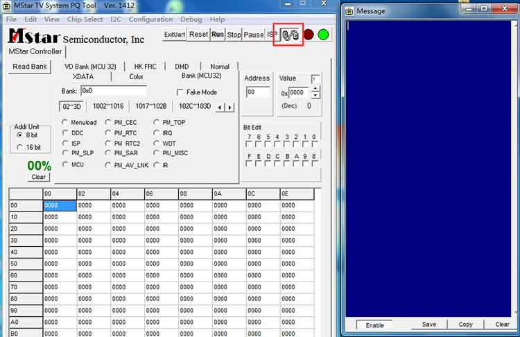
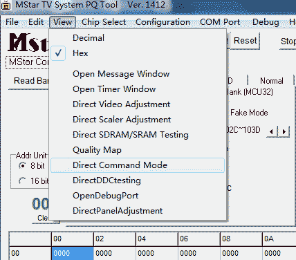
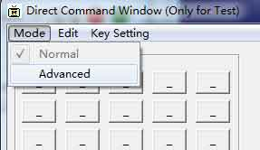
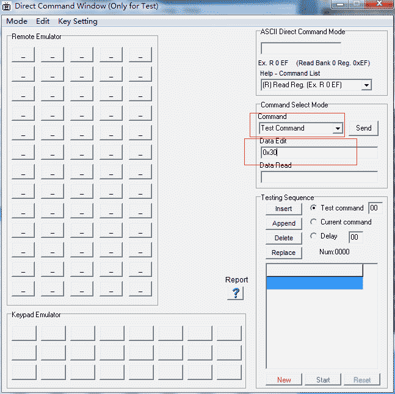

| [跳到末尾][返回主页][返回上一页] | |
| Non OS 系统单步执行Dsebug 接口 | |
| 知识模块 | 根据前辈们的讲解自己写了一个接口，已测试运行OK！（仅供参考） 1.首先在drvUartDebug.c文件中定义函数体如下： #if fy_said_ok case 0x31: void fy2000debug1(void) #endif 2.然后在drvUartDebug.h文件中定义如下： #if fy_said_ok 3.在工作中遇到声音，画面花，LVDS异常等可以用单步执行解决的问题时，直接在Code中加入语句fy2000debug()；即可。 4.如何连接Debug工具使用 打开软件MSTV_Tool.exe ，用串口的方式和TV平台连接好，如下图  然后点击View中的Direct Command Mode 如下图所示，  接着会弹出一个窗口，在弹出的窗口中选择Mode中的Advanced,如下图。  接着会在本框右侧弹出命令菜单，如下图：  然后在Command选项中选择Test Command，在Data Edit选框中输入命令即可。 温馨提示： 根据上面写的接口函数可知，当程序运行到fy2000debug()；时，输入31为函数继续执行。
|
| [返回主页][返回顶部] | |
| ※※※※※※※※※※※※※※※【札 记 分 享】※※※※※※※※※※※※※※※ | |
天空没有鸟的痕迹，但它已飞过 |
|
| 本想沉溺于莲花深处，不料翻滚于水物之间 |
| 更新日期 2018年2月8日 星期四 18:09 |
| 欢迎访问官网 www.fy2000.com 蓝天的精灵工作室 |